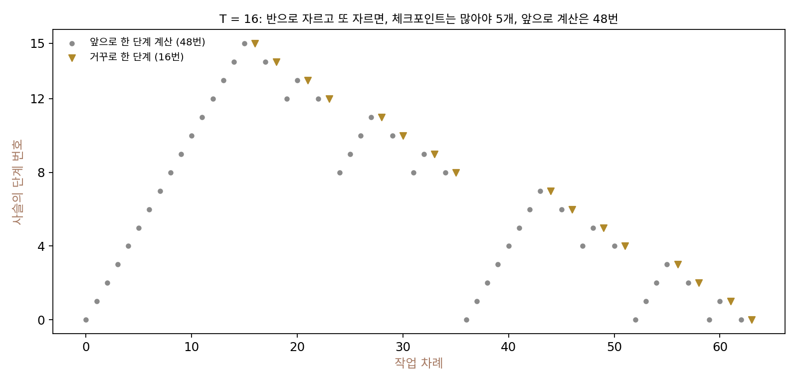
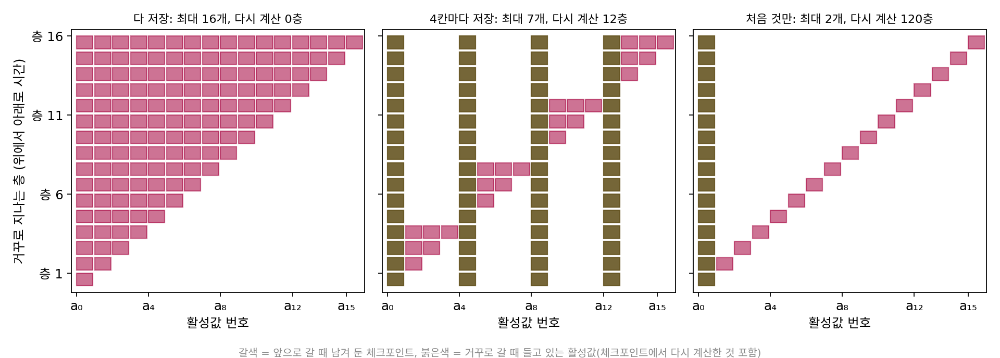
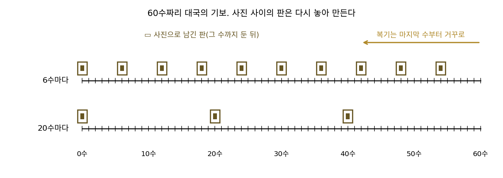
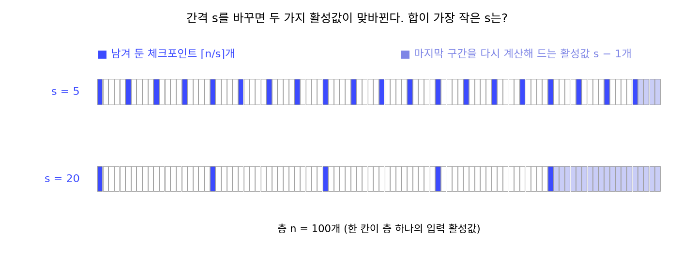
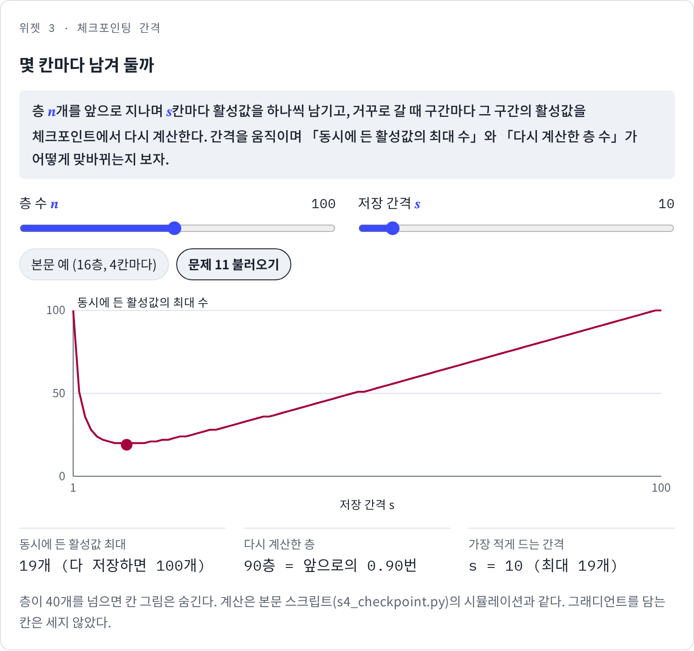
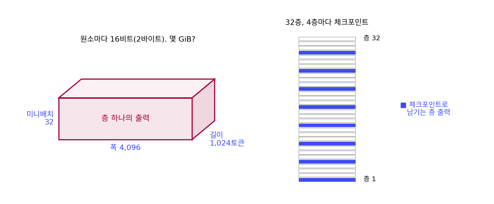

체크포인팅: 활성값을 다 남기지 않고 다시 계산한다
역전파는 거꾸로 훑을 때 칸마다 국소 미분값을 쓰는데, 뉴런 하나에서는 1 − h², h − y, 그리고 곱셈 칸의 xᵢ였다. 이 값들은 앞으로 계산할 때 나온 중간값에서 오기 때문에, 앞으로 계산한 중간값을 거꾸로 훑을 때까지 버리지 못하고 들고 있어야 한다. 층마다 내놓은 이런 중간값을 활성값(activation)이라 부르는데, 답만 낼 때는 넉넉하던 GPU 메모리가 학습을 시작하면 모자라는 일이 여기서 온다. 답만 낼 때는 층을 지나고 나면 앞 층의 값을 버려도 되지만, 학습할 때는 모든 층의 값을 끝까지 들고 있어야 한다. 층이 깊어질수록 늘어나는 이 메모리를, 계산을 조금 더 하는 대신 줄일 수는 없을까?
역사: 거꾸로 가려면 지나온 상태가 필요하다
러멜하트·힌턴·윌리엄스의 1986년 논문도 이 비용을 알고 있었다. 그림 5의 설명에서 그들은 같은 망을 여러 번 되풀이해 돌리는 망(순환 신경망)에 역전파를 쓰려면, 앞으로 가는 동안 중간 단계의 출력이 거꾸로 가기에 필요하므로 단위마다 출력의 이력을 저장해야 한다고 적었다.
계산을 거꾸로 되돌리는 데 드는 저장 공간의 문제는 그보다 앞서 계산 이론에서도 다뤄졌다. 그리반크는 찰스 베넷(Charles Bennett)이 1973년 튜링 기계의 계산을 되돌리는 문제를 다루면서, 계산 노력과 메모리를 맞바꾸는 체크포인트 방식을 미리 보여 주었다고 적었다. 그리반크 자신은 1992년 논문 「역방향 자동미분에서 시간과 공간의 복잡도를 로그로 늘게 하기」에서 남겨 둘 자리를 되풀이해 나누는 방법으로, 실행 시간이 T인 계산의 메모리와 다시 계산하는 시간을 둘 다 log T의 고정된 배수로 묶었다. 그 뒤 신경망 쪽에서는 톈치 천(Tianqi Chen)과 동료들이 2016년 논문 「선형보다 적은 메모리로 깊은 망 학습하기(Training Deep Nets with Sublinear Memory Cost)」에서 같은 생각을 깊은 신경망에 맞춰 정리했다.


거꾸로 갈 때 앞의 값이 필요하면 다 저장하면 되잖아요. 1986년 논문도 「이력을 저장해야 한다」고 그냥 적었고요.

그 논문이 말한 망은 같은 망을 여러 번 되풀이해 돌리는 망이었죠. 되풀이를 천 번 하면 저장할 이력은 얼마나 늘죠?

되풀이할 때마다 단위마다 출력이 하나씩 쌓이니까… 천 배요. 돌리는 시간에 비례해서 메모리가 커지네요.

그래서 베넷이 튜링 기계의 계산을 되돌리는 문제에서 계산 노력과 메모리를 맞바꾼 거구나. 그런데 그건 신경망 얘기가 아니잖아요.

맞아요. 메모리를 계산으로 사는 생각은 계산 이론과 자동미분 쪽에 먼저 있었어요. 그리반크가 1992년에 메모리와 다시 계산하는 시간을 둘 다 log T의 배수로 묶었고, 신경망 쪽에서 천과 동료들이 같은 생각을 깊은 망에 맞춰 정리한 건 2016년이에요.

다른 분야의 결과가 넘어오는 데 스무 해 넘게 걸렸네요. 그러면 층이 한 줄로 이어진 가장 단순한 망에서, 몇 군데만 남기고 다시 계산하면 메모리가 실제로 얼마나 줄어요?
16층 사슬을 거꾸로 지나기
가장 단순한 경우는 층이 한 줄로 이어진 사슬이다. 활성값 a₀에서 출발해 층 16개를 지나 a₁₆에 닿는다고 하자(16은 그림을 그리기 좋게 고른 수다). 층 i를 거꾸로 지나려면 그 층의 입력 a_{i−1}이 있어야 한다. 세 가지 방법을 실제로 흉내 내어, 거꾸로 가는 동안 동시에 들고 있는 활성값의 최대 개수와, 그러려고 다시 계산한 층 수를 세었다.
| 방법 | 동시에 든 활성값 최대 | 다시 계산한 층 |
|---|---|---|
| 다 저장: a₀ … a₁₅를 모두 둔다 | 16 | 0 |
| 4칸마다 저장: a₀, a₄, a₈, a₁₂만 두고 구간마다 다시 계산 | 7 | 12 |
| 처음 것만 저장: 층마다 a₀에서 다시 계산 | 2 | 120 |
가운데 방법은 앞으로 갈 때 4칸마다 하나씩만 남겨 둔다. 거꾸로 갈 때는 마지막 구간(층 13~16)부터 시작해, 그 구간의 체크포인트 a₁₂에서 a₁₃, a₁₄, a₁₅를 다시 계산해 들고 있다가 그 구간을 거꾸로 지나면 버린다. 그다음 구간(층 9~12)도 a₈에서 a₉, a₁₀, a₁₁을 다시 계산해 들고 있다가 버린다. 체크포인트 넷에 다시 계산한 셋을 더해 최대 7개를 들고, 구간마다 셋씩 모두 12층을 다시 계산한다. 앞으로 한 번 가는 것(16층)보다 적은 추가 계산으로 메모리를 반 아래로 줄였다. 처음 것만 남기면 메모리는 2개면 되지만 다시 계산이 0 + 1 + … + 15 = 120층으로, 앞으로 가기(16층)를 일곱 번 넘게 하는 양이다.
간격을 s칸으로 잡으면 들고 있는 활성값의 최대 수는 다음과 같다.
간격이 작으면 체크포인트가 많고, 간격이 크면 구간 하나를 다시 계산해 들고 있는 활성값이 많다. 16층에서 s = 2와 s = 8은 둘 다 최대 9개로 s = 4의 7개보다 많다. 이렇게 앞으로 갈 때 활성값을 몇 군데만 남겨 두고, 거꾸로 갈 때 필요한 구간을 그때 다시 계산해 메모리를 줄이는 방법을 체크포인팅 (몇 군데만 남기고 다시 계산하기 / gradient checkpointing)이라 한다. 메모리를 계산으로 사는 것이다.

ML에서: 큰 모델의 메모리와 torch.utils.checkpoint
천과 동료들은 2016년 논문에서 층 수가 n인 망을 미니배치마다 앞으로 가기를 한 번 더 하는 비용으로, 층 수보다 훨씬 느리게 늘어나는 메모리로 학습할 수 있다고 보였다(얼마나 느리게인지는 아래 문제 11에서 직접 구한다). 그들이 보고한 대표 실험은 이미지넷의 1,000층짜리 잔차 신경망으로, 메모리를 48 GB에서 7 GB로 줄이는 데 실행 시간이 30%쯤 더 들었다. 파이토치에는 이 일을 하는 torch.utils.checkpoint가 있어서, 감싼 구간은 앞으로 갈 때 활성값을 남기지 않고 거꾸로 갈 때 다시 계산한다. 큰 언어 모델을 학습할 때 층마다, 또는 몇 층마다 이것을 거는 것이 흔한 설정이다. 학습이 추론보다 메모리를 많이 먹은 것은 거꾸로 가기에 쓸 활성값 때문이었으니, 그 활성값을 줄이는 방법도 거꾸로 가기 쪽에서 나왔다.
문제 10. 바둑을 거꾸로 복기하기
60수짜리 바둑 대국을 마지막 수부터 한 수씩 거꾸로 짚으며 복기하려면, 수마다 그 수를 두기 직전의 판이 눈앞에 있어야 한다. 기보(모든 수의 순서)는 있으니, 남겨 둔 판에서 수를 다시 놓으면 어느 판이든 만들 수 있다. 다만 판 사진을 찍어 둘 수 있는 장수가 정해져 있다. (가) 모든 판을 사진으로 남기면 몇 장인가? (나) 처음 빈 판 하나만 남기면 다시 놓는 수는 모두 몇 수인가? (다) 6수마다 사진을 남기면, 동시에 들고 있는 판은 최대 몇 장이고 다시 놓는 수는 몇 수인가? 20수마다라면?

(가)는 60장이야. (나)는 마지막 수를 짚으려면 59수를 다시 놓아야 하고, 그다음은 58수… 0부터 59까지 더하면 1,770수. (다)는 6수마다 사진을 남기면 10장이니까, 들고 있는 판도 10장이면 되겠네.
마지막 구간(55수~60수)을 거꾸로 짚을 때, 사진 말고 무엇을 들고 있어야 하죠?
54수 뒤의 사진에서 다시 놓아 만든 판들이요. 55수, 56수, … 59수를 두기 직전 판 다섯 장.

아, 그걸 안 셌어요. 10 + 5 = 15장이에요. 다시 놓는 수는 구간마다 다섯 수씩 열 구간이라 50수고요.
20수마다면 사진은 3장인데 구간 하나에서 다시 만든 판을 19장 들고 있어야 해서 22장이야. 다시 놓는 수는 19 × 3 = 57수. 사진을 줄였더니 오히려 더 많이 들고 있게 됐어.
들고 있는 장수가 15장, 22장으로 달랐어요. 간격을 바꾸면 무엇과 무엇이 맞바뀌는 거죠?

사진 장수와 한 구간의 길이요. 간격이 크면 사진은 적지만 구간 하나를 통째로 다시 만들어 들고 있어야 하고, 간격이 작으면 그 반대예요. 둘의 합이 가장 작은 간격이 어딘가 가운데에 있을 거예요.

다시 놓는 수는 어느 간격이든 60수를 넘지 않았죠. 복기를 한 번 더 하는 정도의 값으로 들고 있을 판을 크게 줄인 거예요. 그 가운데 간격이 어디인지는 바로 다음 문제에서 찾아봐요.
문제 11. 가장 좋은 간격
층 n개짜리 사슬에서 s칸마다 체크포인트를 남기면, 거꾸로 가는 동안 동시에 든 활성값의 최대 수는 M(s) = ⌈n/s⌉ + (s − 1)이다. (가) n = 100일 때 s = 2, 5, 10, 20, 50의 M을 구하라. 가장 작은 s는? (나) 일반적으로 M을 가장 작게 하는 s는 n의 어떤 함수에 가까운가? 그때 M은? (다) n = 10,000에서는? 다시 계산하는 층 수는 앞으로 가기의 몇 번에 해당하는가? (풀어 본 뒤 위젯 3의 「문제 11 불러오기」로 확인해 보자.)

(가)는 51, 24, 19, 24, 51이에요. s = 10에서 19개로 가장 작아요. 양쪽이 대칭이네요.
그럼 체크포인트를 아주 드물게, 50칸마다 두면 메모리가 가장 적게 들 것 같지 않나요?
표에서는 51이라 오히려 2칸마다랑 같아요. 체크포인트는 둘뿐인데 구간 하나를 다시 계산한 활성값 49개를 들고 있어야 하니까요.
그 대칭에서 무엇이 보이죠? s와 n/s를 나란히 써 보세요.
s = 5면 n/s = 20, s = 20이면 n/s = 5. 둘의 역할이 바뀌었을 뿐이라 합이 같아요. 가운데, 그러니까 s = n/s일 때가 가장 작겠네요.
s와 n/s를 곱하면 늘 n이네. 곱이 정해진 두 양수의 합이면… 산술평균이 기하평균보다 작지 않다는 부등식을 쓸 수 있겠다.
그 부등식에서 합이 가장 작아지는 건 언제죠?
두 수가 같을 때요. s = √n일 때 가장 작고, 가장 작은 합은 2√n이에요. n = 100이면 √100 = 10, M ≈ 20이고요.
근데 아까 표에서는 19였는데?
식에 −1이 있었지. 그래서 실제로는 19야.

n = 10,000에서는 어떨까요? 메모리가 층 수에 비해 얼마나 줄죠?

s = 100에서 199개예요. 다 저장하면 10,000개니까 50분의 1이에요. 층 수가 백 배가 될 때 메모리는 열 배만 늘어요.
그 대신 무엇을 더 하게 되죠?
다시 계산하는 층은 9,900개로 앞으로 가기의 0.99번이에요. 앞으로 한 번 더 가는 값으로 메모리를 √n 꼴로 줄인 거예요. 천과 동료들이 말한 「앞으로 한 번 더」가 이 계산이었네요.

바둑 복기에서 60수면 √60 ≈ 7.7이니까 6수나 8수마다가 좋았겠어요. 문제 10에서 6수마다가 20수마다보다 나았던 게 우연이 아니었네요.
위젯 3에서 문제 11 설정을 불러와, 간격을 10에서 한 칸씩 옮길 때 최대 보관 수가 어떻게 바뀌는지 확인해 보세요.

문제 12. 가상의 언어 모델이 들고 있는 활성값
층 32개, 미니배치 32개, 문장 길이 1,024토큰, 폭 4,096, 16비트(2바이트) 실수로 학습하는 모델이 있다(이 책에서 고른 가상의 설정). (가) 층 하나가 내놓는 출력 텐서(미니배치 × 길이 × 폭) 하나는 몇 GiB인가? (나) 층마다 이런 텐서를 하나씩만 남긴다고 쳐도 32층이면 몇 GiB인가? 실제로는 층 안의 여러 중간값도 남겨야 해서 층마다 4개, 10개라면? (다) 층 출력만 4층마다 체크포인트로 남기면, 동시에 드는 층 출력은 최대 몇 개이고 몇 GiB인가? 다시 계산하는 층은 몇 개인가?

(가)는 32 × 1,024 × 4,096 × 2바이트 = 268,435,456바이트, 2³⁰으로 나누면 0.25 GiB요. 파라미터 수와는 상관이 없네요. (나)는 0.25 × 32 = 8 GiB요. 그 정도면 GPU 하나에 들어가겠는데요.
층 안에서 거꾸로 가기에 필요한 값이 층 출력 하나뿐일까요? 선형층 하나를 거꾸로 지날 때 무엇이 필요한지 떠올려 보세요.
선형층 Y = XW의 ∂L/∂W를 구하려면 그 층의 입력 X가 있어야 했어요. 층 안에 선형층이 여럿이고 활성화 함수도 있으니까 그 입력들을 다 남겨야 해요. 층마다 4개면 32 GiB, 10개면 80 GiB예요. 8 GiB로 잡은 건 너무 적었네요.
(다)는 문제 11의 식에 n = 32, s = 4를 넣으면 8 + 3 = 11개, 0.25 × 11 = 2.75 GiB야. 다시 계산하는 층은 구간마다 3층씩 여덟 구간이라 24층, 앞으로 가기의 0.75번.
층 출력만 남기고 층 안의 중간값은 다시 계산하는 거니까, 층 안의 값은 언제 메모리에 올라오죠?
그 층을 거꾸로 지날 때 그 층 하나만큼만이요. 그러면 층 안의 값 10개를 32층 내내 들고 있는 대신 한 층의 중간값만 잠깐 들면 돼요.
그럼 모델은 그대로인데 문장만 길게 넣어도 메모리가 늘어?
응, (가)에서 텐서 크기에 파라미터 수는 안 들어갔잖아. 활성값 메모리는 미니배치 × 길이 × 폭 × 층 수에 비례하니까, 문장을 길게 넣으면 메모리가 모자라.
그래서 긴 문맥으로 학습할 때 「그래디언트 체크포인팅을 켜라」는 말이 꼭 나오는구나.

긴 여행에서 짐을 다 들고 다니는 대신 역마다 보관함 몇 군데에 맡겨 두고, 필요할 때 그 구간 짐만 다시 꺼내 오는 거랑 같네.